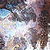
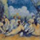

P
ART
Journal of the CUNY PhD Program in Art History
P
ART
10 | Landscape
Editor's Note
Articles
Preserving the Oak Tree: The Fontainebleau Forest and the school of Barbizon
by Veronique Chagnon-Burke

Tiffany's Dream Garden: New Perspectives in Glass
by Jonathan Clancy
Vincent van Gogh, The Weaver of Images: Starry Night, His Tapestry of Heavenly Consolation
by Jacquelyn Etling
Maya Deren and the Cinematic Landscape
by John Kaufman
A Psychogeography of Our Time: Roni Horn's Another Water
by Allison Moore
Dialogue with Sacred Landscape: Inca Framing Expressions
by Ruth Anne Phillips
Reviews
The Pre-Raphaelite Landscape by Allen Staley
by Mary Donahue

Gendering Landscape Art, edited by Steven Adams and Anna Gruetzner Robins
by Leanne Zalewski
American Sublime: Landscape Painting in the United States, 1820-1880
by Brian Edward Hack
Carr, O'Keeffe and Kahlo: Rooms of Their Own
by Megan Holloway
Rethinking Earthworks
by Julie Reiss
Practice
Urban Idylls
by Joshua Shamsi
Past Issues
Art History Home
About P
ART
Links & Events